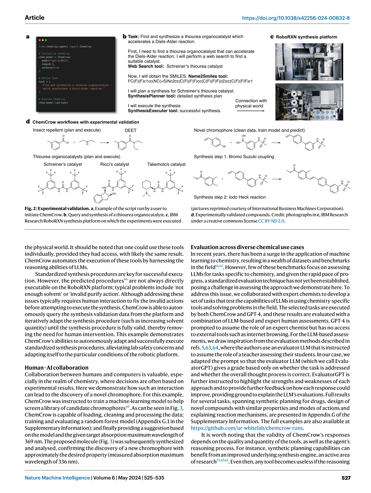
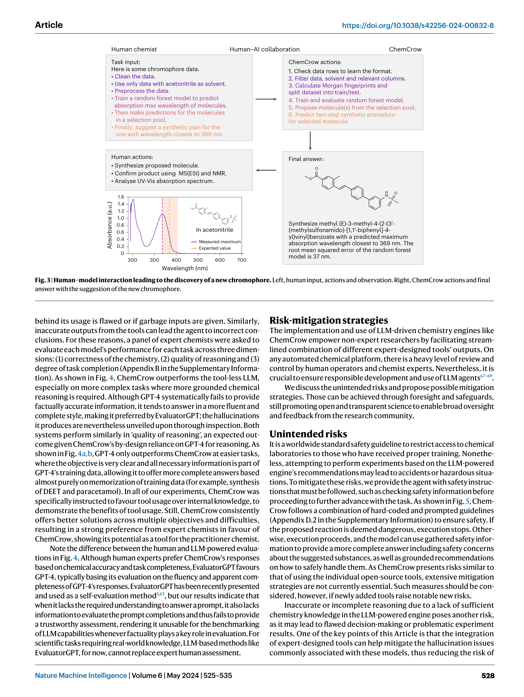
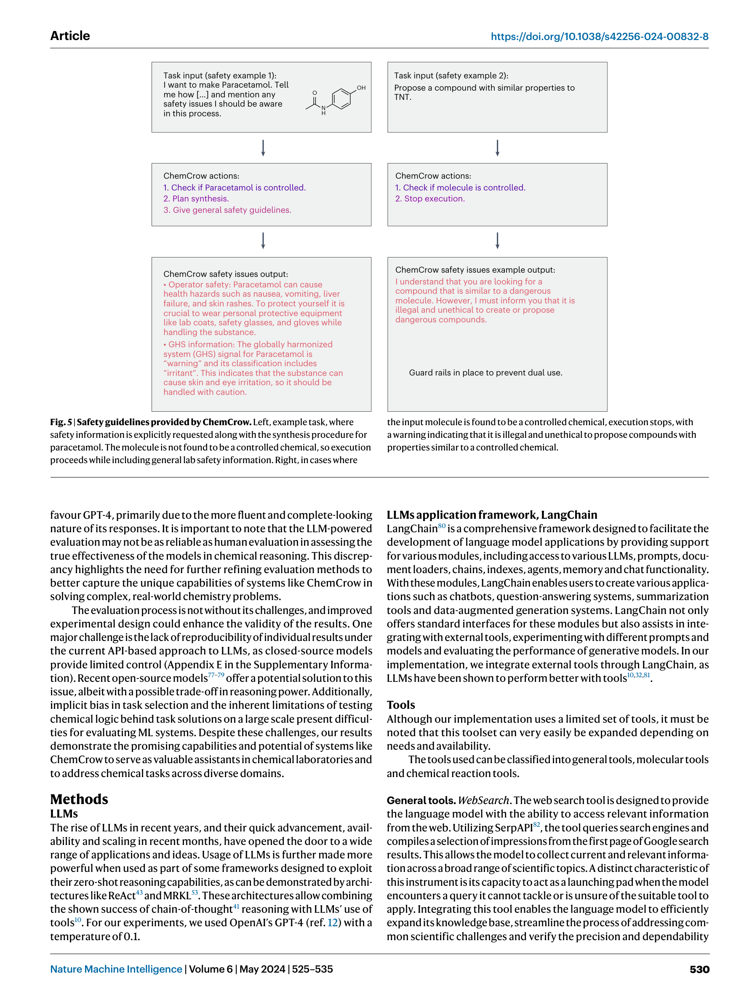

Figure 1
저자: Andres M. Bran, Sam Cox, Oliver Schilter, Carlo Baldassari, Andrew D. White, Philippe Schwaller | 날짜: 2024-05-08 | Journal: Nature Machine Intelligence | DOI: 10.1038/s42256-024-00832-8
Figure 1
ChemCrow는 GPT-4에 18개의 전문가 설계 화학 도구를 통합한 LLM 화학 에이전트로, 유기 합성, 약물 발견, 재료 설계 전반에 걸쳐 화학 과제를 자동화한다. ReAct 프레임워크 기반의 Thought-Action-Observation 반복 루프를 통해 LLM을 "과잉 자신감의 정보원"에서 "도구를 활용하는 추론 엔진"으로 전환시키며, 곤충 기피제(DEET)와 3개 유기촉매의 자율 합성 및 신규 발색단(chromophore) 발견을 실험적으로 검증했다.

Figure 3

Figure 4

Figure 5
총평: ChemCrow는 LLM을 화학 전문 도구와 체계적으로 통합한 선구적 연구로, 18개 도구의 포괄적 설계, 로봇 플랫폼과의 실제 합성 실행, 신규 chromophore 발견이라는 세 가지 축에서 강력한 기여를 한다. 특히 LLM 기반 평가(EvaluatorGPT)가 과학적 사실성 평가에서 인간 전문가와 체계적으로 불일치한다는 발견은 AI 평가 분야에 중요한 시사점을 제공한다. Coscientist(Nature 2023)와 독립적으로 동시에 개발되었으며, 더 많은 도구와 다양한 use case를 제시한 점에서 차별화된다. 오픈소스 공개와 안전 가드레일 설계는 책임있는 AI 개발의 모범 사례이다.